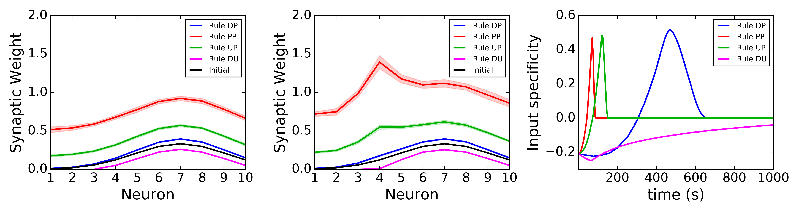
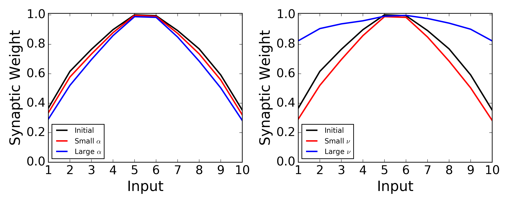

<html><pre>
<h2>The Role of Neuromodulators in Cortical Plasticity. 
A Computational Perspective. </h2>

<h3>Victor Pedrosa and Claudia Clopath </h3>
<hr>

<h3>General description </h3>
Simulations of a plastic feedforward network composed of N presynaptic neurons 
and one postsynaptic neuron as in:

[1] Pedrosa V and Clopath C (2017) The Role of Neuromodulators in Cortical Plasticity. 
A Computational Perspective. Front. Synaptic Neurosci. 8:38. doi: 10.3389/fnsyn.2016.00038

Code written by: Victor Pedrosa <v.pedrosa15@imperial.ac.uk>
Imperial College London, London, UK - Dec 2016

<h3>List of files </h3>
(1) 1-Neuromodulation_and_plasticity.py
Simulates a feedforward network of integrate-and-fire neurons with plastic excitatory
synapses. The presynaptic neurons fire with the same mean firing rate.

(2) 2-Neuromodulation_and_plasticity_with_special_input.py
Simulates a feedforward network of integrate-and-fire neurons with plastic excitatory
synapses. One of the presynaptic neurons fire with a higher firing rate.

(3) 3-Neuromodulation_and_plasticity_Activity_vs_Learning_rate.py
Simulates a feedforward network of integrate-and-fire neurons with plastic excitatory
synapses. The presynaptic neurons fire with the same mean firing rate. The learning rate 
and the presynaptic activity are chosen to generate figure 2.

(4) Make_figs.py
Plots and save the figure generated with the data produced from (1) and (2).

(5) Make_figs2.py
Plots and save the figure generated with the data produced from (3).

(6) Neuromodulators_Pedrosa_and_Clopath16_fig1.py
Runs (1), (2) and (4). Generates figures 1 F-H in [1].

(7) Neuromodulators_Pedrosa_and_Clopath16_fig2.py
Runs (3) and (5). Generates figures 2C and 2F in [1].

(8) W0_new.npy
Initial synaptic weights for (1) and (2).


<h3>To simulate the network and plot the figures </h3>

1. run (6): simulates the network, saves the results and generate figure 1 (top below);

2. run (7): simulates the network, saves the results and generate figure 2 (bottom below).








